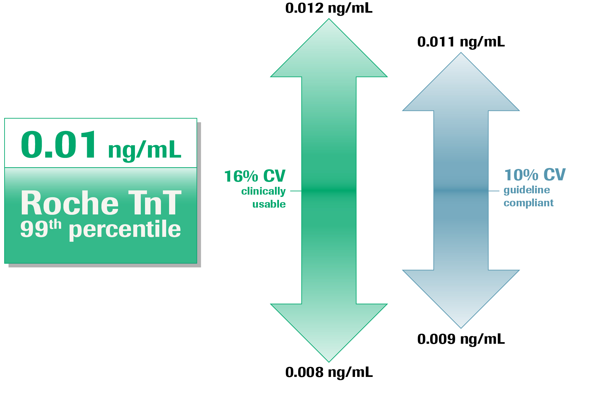

The detection of Troponin when in low concentration inherently increases variability 4
Is this difference clinically relevant?
Would you agree if we, at our 99th percentile, had a 10% CV that would make this assay guideline compliant?
Is the difference between 16% and 10% clinically significant?
A patient result having been reported at .008 ng/mL and a patient result that is reported at .009 ng/mL. Is this clinically significant? Both would read 0.01 ng/mL on the result.